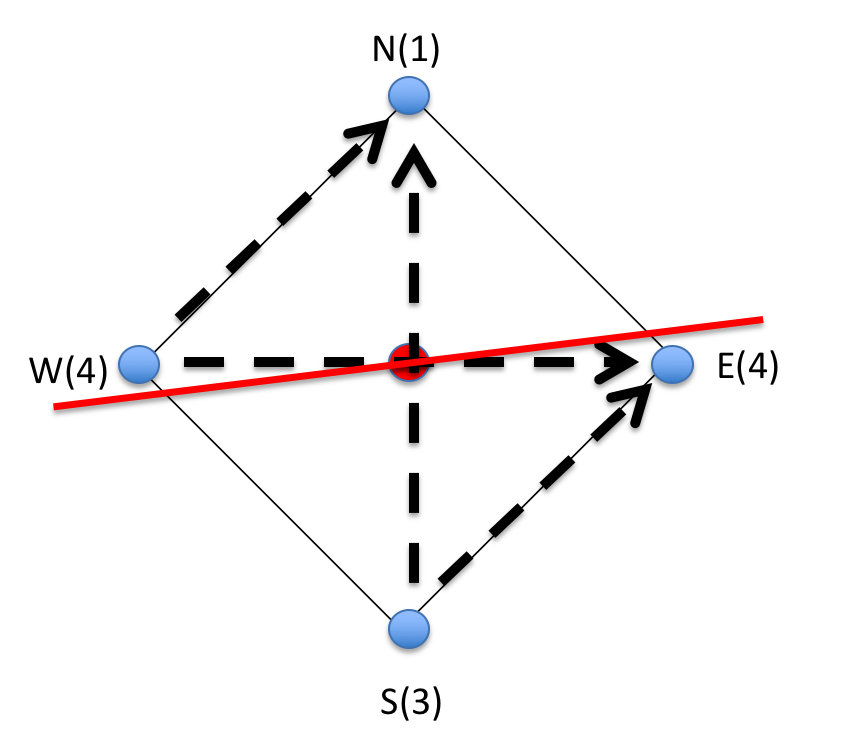

Hydraulic fracturing monitoring / Blue Canyon Dome
Watching a Hydraulic Fracture Open, Breathe, and Heal at Blue Canyon Dome
Hydraulic fracturing is often described as a sudden event: water goes in, rock breaks, and small earthquakes may follow. The quieter story is more interesting. A fracture opens, changes the stress around it, closes after pumping stops, and may continue to heal as rough rock surfaces come back into contact.
The Blue Canyon Dome experiment gave us a compact field laboratory for watching that process with active seismic waves. Instead of waiting passively for microearthquakes, we repeatedly sent controlled seismic signals through the rock and listened for tiny changes in the returning waveforms. In everyday language, we were asking the rock the same question again and again: has your stiffness changed since the last minute?

A central stimulation point is surrounded by four monitoring wells. The different source-receiver paths act like lines of sight through the stimulated rock volume.
- Measure quietly: repeat active shots reveal stiffness changes even when deformation is not seismic.
- Read path by path: some ray paths can speed up while others slow down during stimulation.
- Watch recovery: closure can be fast, but contact healing continues more gradually after shut-in.
1) A small field laboratory for a big question
Blue Canyon Dome is a shallow field test site south of Albuquerque, New Mexico. The experiment used a compact five-spot geometry: one stimulation well near the center and four monitoring wells around it. Because the wells were close together, the site behaved almost like a natural laboratory. It was still real rock, with real fractures and real field noise, but the geometry was simple enough that we could reason carefully about which parts of the rock each seismic path sampled.
The target was near-surface rhyolite below a weathered layer. The injection occurred near the end of casing, around 15 m depth. For the seismic analysis, the most useful paths were not the steep ones that ran through the weaker weathered layer, but the more horizontal paths that crossed the stimulated zone. Those paths gave us a clearer view of how the rock changed around the fracture.
2) Instead of waiting for earthquakes, we made our own repeatable signals
Many hydraulic-fracturing studies focus on microseismicity: the tiny earthquakes generated when parts of the rock slip. Microseismic monitoring is powerful, but it only sees the noisy part of deformation. A fracture can also open, creep, or change contact stiffness without producing a clear earthquake.
Continuous active-source monitoring fills that gap. A controlled source is fired again and again, and receivers record the response. If the source and receiver stay fixed, then a change in the waveform is not just a new measurement; it is a clue that the medium between them has changed.
We do not need every change to radiate an earthquake. By sending repeatable signals, we can detect quiet changes in the medium through small waveform shifts.
The part of the waveform I care about most is the coda, the later ringing after the first arrival. A direct arrival is like one clean beam of light. The coda is more like echoes in a room: it has bounced, scattered, and sampled the medium many times. That makes it messy, but also extremely sensitive.
3) Coda wave interferometry: using tiny time shifts as a stiffness meter
Coda wave interferometry compares two waveforms from the same source-receiver pair. If the later waveform looks like a slightly stretched version of the earlier one, the waves are arriving later and the apparent velocity has decreased. If it looks slightly compressed, the waves are arriving earlier and the apparent velocity has increased.
A useful way to think about this is a piano string. Tighten the string and the pitch goes up; loosen it and the pitch goes down. In rock, the "pitch" is not musical, but the principle is similar: seismic velocity is linked to stiffness. When cracks open or contacts weaken, waves slow down. When stress closes cracks or increases contact stiffness, waves can speed up.
If the later coda has to be stretched to match the baseline, the path has slowed down. If it has to be compressed, the path has sped up.
This is not a photograph of the fracture. It is a sensitive measurement of how the rock's elastic properties changed along a path. The scientific challenge is to connect those path-wise velocity changes to physical processes: pressure diffusion, stress redistribution, fracture opening, closure, and healing.
4) During injection, two opposite effects compete
When fluid pressure rises, one might expect the rock to simply weaken and seismic velocity to go down. But field data are rarely that simple. Pressure can also change the stress state in a way that closes some compliant cracks or increases contact forces along some paths. That can make waves travel faster.
So the key observation is not just "velocity changed." The key observation is that different paths can tell different stories. Some paths may record stiffening, while others record fracture opening. This mixture is exactly what makes the Blue Canyon Dome data interesting: it lets us think about a fracture as a spatially evolving object, not just as a single event.
Stress loading and crack closure can make contacts stiffer, so waves arrive a little earlier.
Fracture opening and fluid-filled separation can weaken the path, so waves arrive a little later.
Hydraulic stimulation does not produce one universal velocity response. The sign of the change depends on what part of the fracture-stress system a path is sampling.
The pump schedule and pressure record provide the time reference for interpreting the seismic velocity changes.
5) After pumping stops, the fracture does not recover all at once
One of the most human ways to understand this experiment is to imagine two rough surfaces pressed together. When fluid opens a fracture, those surfaces separate. When pressure drops, they may touch again quickly, but touching is not the same as fully healing. The tiny contact points between grains and asperities continue to adjust.
This gives a natural two-stage recovery. First comes a fast mechanical response: pressure drops, the fracture closes, and part of the velocity loss recovers. Then comes a slower response, related to contact healing and nonlinear rock physics. That slower behavior connects Blue Canyon Dome to a broader theme in my research: rocks remember how they have been disturbed, and their elastic properties can recover over minutes, hours, or even longer.
The fast part is mostly closure. The slow part is contact healing: the gradual rebuilding of stiffness at rough surfaces after they have been disturbed.
6) Why this matters beyond one field test
The practical value is monitoring. In geothermal reservoirs, carbon storage, hydraulic stimulation, and other subsurface operations, we often care about deformation that is partly silent. Microearthquakes show us where some slip occurs, but they do not show the full mechanical story. Active seismic monitoring can help fill that gap by tracking changes in stiffness even when the rock is quiet.
The scientific value is interpretation. A velocity increase is not automatically "good" and a velocity decrease is not automatically "bad." They are clues. To read them properly, we need to combine wave physics, fracture mechanics, and nonlinear elasticity. That is the larger research thread I see here: using small changes in seismic waves to understand how real rocks damage, recover, and remember.
7) What I would do next
Blue Canyon Dome was shallow and compact, which made it beautifully controlled but also limited. The waveforms are short, P and S energy can overlap, and the choice of coda window matters. A larger geothermal-scale deployment, with cleaner source signatures and longer borehole offsets, could make the interpretation sharper.
The natural next step is to move from path-by-path observations toward an image: not just "this path sped up" or "that path slowed down," but a spatial map of where the rock stiffened, where it weakened, and how those zones recovered after injection. That would turn coda wave interferometry from a sensitive measuring tool into a true fracture-monitoring method.
Related: Snieder, Gret, Douma & Scales, Coda Wave Interferometry for Estimating Nonlinear Behavior in Seismic Velocity (2002).
Project material: Presentation to CWP 2018 Consortium meeting (Golden, US) .